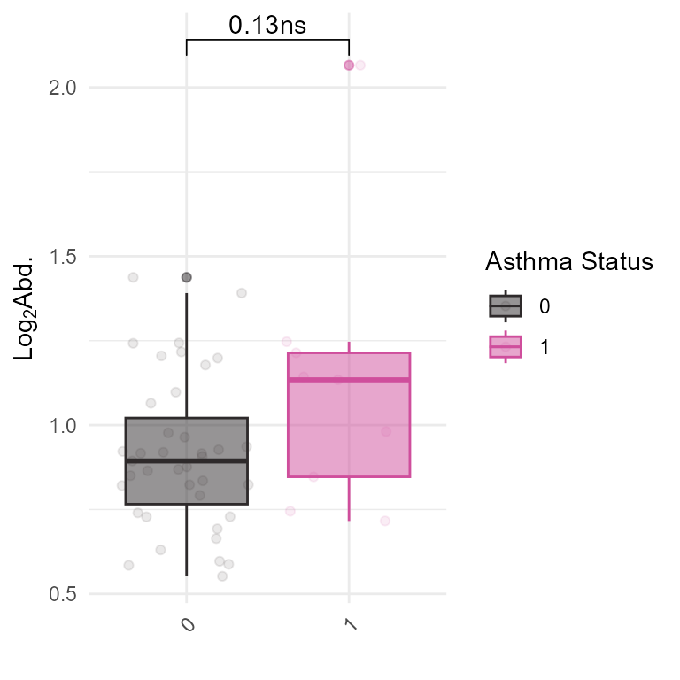

Load Data and Libraries
# Load Libraries
library(tidyverse)
library(tidyexposomics)We will start off with our example dataset pulled from the ISGlobal Exposome Data Challenge 2021 (Maitre et al., 2022).
# Load example data
data("tidyexposomics_example")
# Create exposomic set object
expom <- create_exposomicset(
codebook = tidyexposomics_example$annotated_cb,
exposure = tidyexposomics_example$meta,
omics = list(
"Gene Expression" = tidyexposomics_example$exp_filt,
"Methylation" = tidyexposomics_example$methyl_filt
),
row_data = list(
"Gene Expression" = tidyexposomics_example$exp_fdata,
"Methylation" = tidyexposomics_example$methyl_fdata
)
)## Ensuring all omics datasets are matrices with column names.## Creating SummarizedExperiment objects.## Creating MultiAssayExperiment object.## MultiAssayExperiment created successfully.Custom Analysis
We provide functionality to access the underlying data in the MultiAssayExperiment object and to construct tibbles for your own analysis:
pivot_sample: Pivot the sample data to a tibble with samples as rows and exposures as columns.pivot_feature: Pivot the feature metadata to a tibble with features as rows and feature metadata as columns.pivot_exp: Pivot the sample and experiment assay data to a tibble with samples as rows and sample metadata as columns. Additionally, there will be a column for values for specified features in specified assays.
Pivot Sample
Let’s check out the pivot_sample function. This function
pivots the sample data to a tibble with samples as rows and exposures as
columns.
# Pivot sample data to a tibble
expom |>
pivot_sample() |>
head()## # A tibble: 6 × 19
## .sample e3_sex_None hs_child_age_None h_age_None h_mbmi_None e3_gac_None
## <chr> <fct> <dbl> <dbl> <dbl> <dbl>
## 1 s812 female 6.84 35 33.2 41.4
## 2 s296 female 6.75 32.8 25.1 39.1
## 3 s242 female 6.97 33 24.6 40.4
## 4 s376 male 6.35 27.1 28.3 37
## 5 s1183 female 6.74 32.7 33.3 38.1
## 6 s98 female 6.93 23 31.2 39
## # ℹ 13 more variables: h_native_None <fct>, h_parity_None <fct>,
## # h_pm10_ratio_preg_None <dbl>, h_pm25_ratio_preg_None <dbl>,
## # hs_pm10_yr_hs_h_None <dbl>, hs_pm25_yr_hs_h_None <dbl>, hs_pb_c_Log2 <dbl>,
## # hs_pfna_c_Log2 <dbl>, hs_pfhxs_m_Log2 <dbl>, hs_bpa_madj_Log2 <dbl>,
## # hs_mibp_cadj_Log2 <dbl>, hs_asthma <dbl>, hs_zbmi_who <dbl>We could use this functionality to count the number of asthmatics per sex:
# Count the number of asthma cases by sex status
expom |>
pivot_sample() |>
group_by(hs_asthma, e3_sex_None) |>
reframe(n = n())## # A tibble: 4 × 3
## hs_asthma e3_sex_None n
## <dbl> <fct> <int>
## 1 0 female 23
## 2 0 male 16
## 3 1 female 5
## 4 1 male 4Pivot Feature
The pivot_feature function pivots the feature metadata
to a tibble with features as rows and feature metadata as columns. This
can be useful for exploring the feature metadata in a more flexible
way.
# Pivot feature data to a tibble
expom |>
pivot_feature() |>
head()## # A tibble: 6 × 42
## .exp_name .feature transcript_cluster_id probeset_id seqname strand start
## <chr> <chr> <chr> <chr> <chr> <chr> <int>
## 1 Gene Express… TC08002… TC08002631.hg.1 TC08002631… chr8 - 6.87e6
## 2 Gene Express… TC08000… TC08000910.hg.1 TC08000910… chr8 - 6.84e6
## 3 Gene Express… TC08002… TC08002630.hg.1 TC08002630… chr8 - 6.85e6
## 4 Gene Express… TC02004… TC02004973.hg.1 TC02004973… chr2 + 8.99e7
## 5 Gene Express… TC02004… TC02004949.hg.1 TC02004949… chr2 - 8.96e7
## 6 Gene Express… TC02000… TC02000551.hg.1 TC02000551… chr2 + 8.92e7
## # ℹ 35 more variables: stop <int>, total_probes <int>, gene_assignment <chr>,
## # mrna_assignment <chr>, notes <chr>, phase <chr>, TC_size <dbl>,
## # TSS_Affy <int>, EntrezeGeneID_Affy <chr>, GeneSymbol_Affy <chr>,
## # GeneSymbolDB <chr>, GeneSymbolDB2 <chr>, mrna_ID <chr>, mrna_DB <chr>,
## # mrna_N <int>, notesYN <chr>, geneYN <chr>, genes_N <dbl>, CallRate <dbl>,
## # fil1 <chr>, feature_clean <chr>, Forward_Sequence <chr>, SourceSeq <chr>,
## # Random_Loci <chr>, Methyl27_Loci <chr>, UCSC_RefGene_Name <chr>, …We could use this functionality to count the number of features per omics layer, or to filter features based on their metadata. For example, we can count the number of features per omics layer:
# Count the number of features per omic layer
expom |>
pivot_feature() |>
group_by(.exp_name) |>
summarise(n = n())## # A tibble: 2 × 2
## .exp_name n
## <chr> <int>
## 1 Gene Expression 500
## 2 Methylation 500Pivot Experiment
Now if we want to grab assay data from a particular experiment, we
can do that with the pivot_exp. Let’s try grabbing assay
values for the TC01004453.hg.1 probe (probe for
IL23R) in the Gene Expression experiment:
# Pivot experiment data to a tibble
expom |>
pivot_exp(
exp_name = "Gene Expression",
features = "TC01004453.hg.1"
) |>
head()## # A tibble: 6 × 48
## exp_name .feature .sample counts transcript_cluster_id probeset_id seqname
## <chr> <chr> <chr> <dbl> <chr> <chr> <chr>
## 1 Gene Expres… TC01004… s1002 0.913 TC01004453.hg.1 TC01004453… chr1
## 2 Gene Expres… TC01004… s103 1.37 TC01004453.hg.1 TC01004453… chr1
## 3 Gene Expres… TC01004… s1070 0.657 TC01004453.hg.1 TC01004453… chr1
## 4 Gene Expres… TC01004… s1125 3.19 TC01004453.hg.1 TC01004453… chr1
## 5 Gene Expres… TC01004… s1170 1.32 TC01004453.hg.1 TC01004453… chr1
## 6 Gene Expres… TC01004… s1176 1.37 TC01004453.hg.1 TC01004453… chr1
## # ℹ 41 more variables: strand <chr>, start <int>, stop <int>,
## # total_probes <int>, gene_assignment <chr>, mrna_assignment <chr>,
## # notes <chr>, phase <chr>, TC_size <dbl>, TSS_Affy <int>,
## # EntrezeGeneID_Affy <chr>, GeneSymbol_Affy <chr>, GeneSymbolDB <chr>,
## # GeneSymbolDB2 <chr>, mrna_ID <chr>, mrna_DB <chr>, mrna_N <int>,
## # notesYN <chr>, geneYN <chr>, genes_N <dbl>, CallRate <dbl>, fil1 <chr>,
## # feature_clean <chr>, e3_sex_None <fct>, hs_child_age_None <dbl>, …We can use this functionality to create custom plots or analyses based on the exposure and feature data. For example, we can plot the expression levels of IL23R by asthma status:
# Plot expression of IL23R
expom |>
pivot_exp(
exp_name = "Gene Expression",
features = "TC01004453.hg.1"
) |>
ggplot(aes(
x = as.character(hs_asthma),
y = log2(counts + 1),
color = as.character(hs_asthma),
fill = as.character(hs_asthma)
)) +
geom_boxplot(alpha = 0.5) +
geom_jitter(alpha = 0.1) +
ggpubr::geom_pwc(label = "{p.adj.format}{p.adj.signif}") +
theme_minimal() +
ggpubr::rotate_x_text(angle = 45) +
ggsci::scale_color_cosmic() +
ggsci::scale_fill_cosmic() +
labs(
x = "",
y = expression(Log[2] * "Abd."),
fill = "Asthma Status",
color = "Asthma Status"
)
IL23R gene expression levels (probe TC01004453.hg.1) by asthma status.
Session Info
See Session Info
sessionInfo()
## R version 4.5.1 (2025-06-13 ucrt)
## Platform: x86_64-w64-mingw32/x64
## Running under: Windows 11 x64 (build 26200)
##
## Matrix products: default
## LAPACK version 3.12.1
##
## locale:
## [1] LC_COLLATE=English_United States.utf8
## [2] LC_CTYPE=English_United States.utf8
## [3] LC_MONETARY=English_United States.utf8
## [4] LC_NUMERIC=C
## [5] LC_TIME=English_United States.utf8
##
## time zone: America/New_York
## tzcode source: internal
##
## attached base packages:
## [1] stats4 stats graphics grDevices utils datasets methods
## [8] base
##
## other attached packages:
## [1] tidyexposomics_0.99.16 MultiAssayExperiment_1.36.1
## [3] SummarizedExperiment_1.40.0 Biobase_2.70.0
## [5] GenomicRanges_1.62.1 Seqinfo_1.0.0
## [7] IRanges_2.44.0 S4Vectors_0.48.0
## [9] BiocGenerics_0.56.0 generics_0.1.4
## [11] MatrixGenerics_1.22.0 matrixStats_1.5.0
## [13] lubridate_1.9.5 forcats_1.0.1
## [15] stringr_1.6.0 dplyr_1.1.4
## [17] purrr_1.2.0 readr_2.2.0
## [19] tidyr_1.3.2 tibble_3.3.0
## [21] ggplot2_4.0.2 tidyverse_2.0.0
## [23] BiocStyle_2.38.0
##
## loaded via a namespace (and not attached):
## [1] splines_4.5.1 later_1.4.8 filelock_1.0.3
## [4] hardhat_1.4.2 pROC_1.19.0.1 rpart_4.1.24
## [7] factoextra_2.0.0 lifecycle_1.0.5 httr2_1.2.2
## [10] rstatix_0.7.3 globals_0.19.1 lattice_0.22-7
## [13] MASS_7.3-65 backports_1.5.0 magrittr_2.0.4
## [16] limma_3.66.0 Hmisc_5.2-5 sass_0.4.10
## [19] rmarkdown_2.30 jquerylib_0.1.4 yaml_2.3.12
## [22] httpuv_1.6.16 otel_0.2.0 DBI_1.3.0
## [25] RColorBrewer_1.1-3 abind_1.4-8 nnet_7.3-20
## [28] rappdirs_0.3.4 ipred_0.9-15 lava_1.8.2
## [31] ggrepel_0.9.7 listenv_0.10.1 fenr_1.8.1
## [34] ellipse_0.5.0 RSpectra_0.16-2 parallelly_1.46.1
## [37] pkgdown_2.2.0 codetools_0.2-20 DelayedArray_0.36.0
## [40] DT_0.34.0 tidyselect_1.2.1 farver_2.1.2
## [43] BiocFileCache_3.0.0 base64enc_0.1-6 jsonlite_2.0.0
## [46] caret_7.0-1 Formula_1.2-5 survival_3.8-3
## [49] iterators_1.0.14 systemfonts_1.3.2 foreach_1.5.2
## [52] tools_4.5.1 ragg_1.5.0 Rcpp_1.1.1
## [55] glue_1.8.0 rARPACK_0.11-0 prodlim_2025.04.28
## [58] gridExtra_2.3 SparseArray_1.10.8 BiocBaseUtils_1.12.0
## [61] xfun_0.54 mixOmics_6.34.0 withr_3.0.2
## [64] BiocManager_1.30.27 fastmap_1.2.0 digest_0.6.39
## [67] timechange_0.4.0 R6_2.6.1 mime_0.13
## [70] RGCCA_3.0.3 visdat_0.6.0 textshaping_1.0.4
## [73] colorspace_2.1-2 RSQLite_2.4.6 ggsci_4.2.0
## [76] utf8_1.2.6 data.table_1.18.2.1 recipes_1.3.1
## [79] corpcor_1.6.10 class_7.3-23 httr_1.4.8
## [82] htmlwidgets_1.6.4 S4Arrays_1.10.1 ModelMetrics_1.2.2.2
## [85] pkgconfig_2.0.3 gtable_0.3.6 timeDate_4052.112
## [88] blob_1.3.0 S7_0.2.1 XVector_0.50.0
## [91] htmltools_0.5.9 carData_3.0-6 bookdown_0.46
## [94] naniar_1.1.0 scales_1.4.0 gower_1.0.2
## [97] knitr_1.51 rstudioapi_0.18.0 tzdb_0.5.0
## [100] reshape2_1.4.5 checkmate_2.3.4 nlme_3.1-168
## [103] curl_7.0.0 cachem_1.1.0 parallel_4.5.1
## [106] foreign_0.8-90 desc_1.4.3 pillar_1.11.1
## [109] grid_4.5.1 vctrs_0.6.5 promises_1.5.0
## [112] ggpubr_0.6.3 car_3.1-5 dbplyr_2.5.2
## [115] xtable_1.8-8 Deriv_4.2.0 cluster_2.1.8.2
## [118] htmlTable_2.4.3 evaluate_1.0.5 cli_3.6.5
## [121] compiler_4.5.1 crayon_1.5.3 rlang_1.1.7
## [124] future.apply_1.20.2 ggsignif_0.6.4 labeling_0.4.3
## [127] tidybulk_2.0.1 plyr_1.8.9 fs_2.1.0
## [130] stringi_1.8.7 BiocParallel_1.44.0 assertthat_0.2.1
## [133] Matrix_1.7-4 hms_1.1.4 bit64_4.6.0-1
## [136] future_1.70.0 statmod_1.5.1 shiny_1.13.0
## [139] igraph_2.2.2 broom_1.0.12 memoise_2.0.1
## [142] bslib_0.10.0 bit_4.6.0